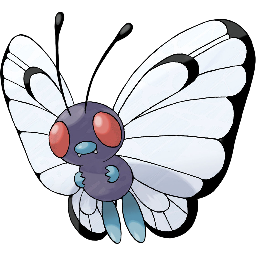
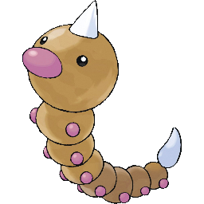

Pokemon 1 - Bulbasaur

There is a plant seed on its back right from the day this Pokémon is born. The seed slowly grows larger.
Pokemon 2 - Ivysaur

When the bulb on its back grows large, it appears to lose the ability to stand on its hind legs.
Pokemon 3- Venusaur

Its plant blooms when it is absorbing solar energy. It stays on the move to seek sunlight.
Pokemon 4 - Charmander

It has a preference for hot things. When it rains, steam is said to spout from the tip of its tail.
Pokemon 5 - Charmeleon

It has a barbaric nature. In battle, it whips its fiery tail around and slashes away with sharp claws.
Pokemon 6 - Charizard

It spits fire that is hot enough to melt boulders. It may cause forest fires by blowing flames.
Pokemon 7 - Squirtle

When it retracts its long neck into its shell, it squirts out water with vigorous force.
Pokemon 8 - Wartortle

It is recognized as a symbol of longevity. If its shell has algae on it, that Wartortle is very old.
Pokemon 9 - Blastoise

It crushes its foe under its heavy body to cause fainting. In a pinch, it will withdraw inside its shell.
Pokemon 10 - Caterpie

For protection, it releases a horrible stench from the antenna on its head to drive away enemies.
Pokemon 11 - Metapod

It is waiting for the moment to evolve. At this stage, it can only harden, so it remains motionless to avoid attack.
Pokemon 12 - Butterfree
In battle, it flaps its wings at great speed to release highly toxic dust into the air.
Pokemon 13 - Weedle
Beware of the sharp stinger on its head. It hides in grass and bushes where it eats leaves.
Pokemon 14 - Kakuna

Able to move only slightly. When endangered, it may stick out its stinger and poison its enemy.
Pokemon 15 - Beedrill

It has three poisonous stingers on its forelegs and its tail. They are used to jab its enemy repeatedly.
Pokemon 16 - Pidgey

Very docile. If attacked, it will often kick up sand to protect itself rather than fight back.
Pokemon 17 - Pidgeotto

This Pokémon is full of vitality. It constantly flies around its large territory in search of prey.
Pokemon 18 - Pidgeot

This Pokémon flies at Mach 2 speed, seeking prey. Its large talons are feared as wicked weapons.
Pokemon 19 - Rattata

Will chew on anything with its fangs. If you see one, you can be certain that 40 more live in the area.
Pokemon 20 - Raticate

Its hind feet are webbed. They act as flippers, so it can swim in rivers and hunt for prey.